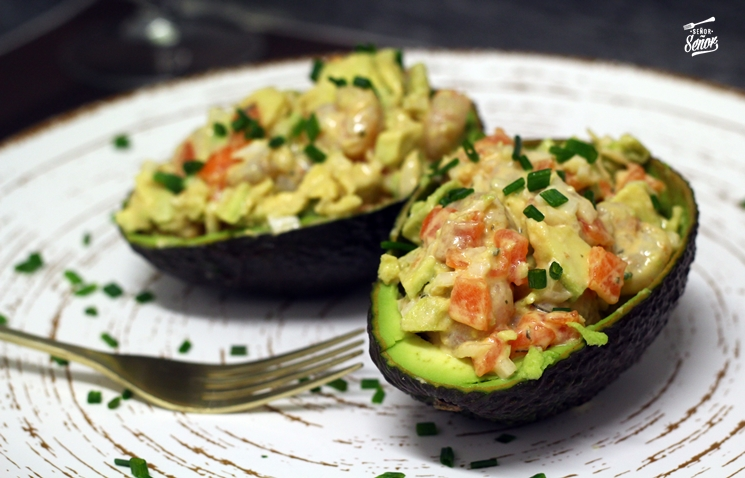

Inicio
Sobre mí
Recetas
Contacto
Otras Cosas
Aguacates Rellenos de Langostinos

⏰
Tiempo total:
?? minutos
Ingredientes
2 aguacates
500 grs. de langostinos
1 cebolleta
2 cucharaditas de alcaparras
1 huevo
350 grs. de lechuga
150 grs. de zanahoria
1 taza de mayonesa
2 cucharadas de ketchup
sal
Preparación
1.
Cocer los langostinos en agua hirviendo durante 1 minuto contando desde que el agua comience a hervir y tras echar los langostinos.
2.
Sacar los langostinos escurridos y ponerlos en un cuenco con agua fría con bastante sal, dejar enfriar, escurrir, pelar y reservar.
3.
Lavar la lechuga y cortarla en juliana.
4.
Raspar la piel a las zanahorias, lavarlas y cortarlas en juliana.
5.
Pelar la cebolleta y picarla muy menuda.
6.
Cortar los aguacates por la mitad en sentido longitudinal y extraer los huesos.
7.
Trocear los langostinos, dejando unos cuantos enteros para adornar.
8.
Mezclar en un cuenco las zanahorias, la lechuga, los langostinos troceados, la cebolleta y las alcaparras.
9.
Mezclar la mayonesa con el ketchup y agregar a la ensalada preparada, mezclando bien.
10.
Rellenar los huecos de los aguacates con la ensalada, adornar con los langostinos reservados y servir.
Autor: Selena
Consejos:
Tips d'aguacates jo q se.
Recetas